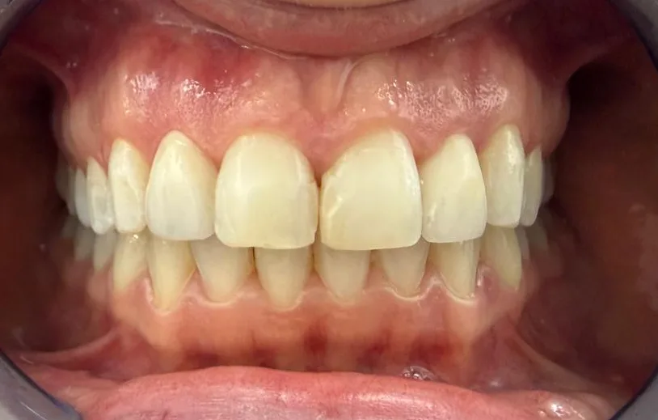

Odontoiatria a Milano
Studio dentistico storico a Milano dal 1964: cure odontoiatriche complete eseguite da dentisti e specialisti qualificati, in Viale Pisa 10.
Lo studio dentistico Minetti
Fondato nel 1964, lo studio dentistico Minetti è un punto di riferimento per l'odontoiatria a Milano. Il nostro team riunisce dentisti, igienisti e specialisti che lavorano in sinergia per offrire percorsi di cura completi, dalla prevenzione ai trattamenti più complessi di implantologia e protesi.
Ogni paziente viene accolto con una valutazione iniziale approfondita, da cui nasce un piano di trattamento personalizzato, trasparente e condiviso.
Igiene e profilassi dentale
La prevenzione è il primo passo per una bocca sana. Le sedute di igiene professionale rimuovono placca e tartaro che l'igiene domiciliare non riesce a eliminare, prevenendo carie, gengiviti e parodontite. Affianchiamo la seduta a istruzioni personalizzate per la cura quotidiana.
Prestazioni incluse
- Detartrasi e rimozione del tartaro
- Air-polishing e lucidatura
- Istruzioni di igiene domiciliare
- Controllo periodico di carie e gengive

Odontoiatria conservativa
L'odontoiatria conservativa si occupa della diagnosi e del trattamento della carie, con l'obiettivo di preservare il più possibile il tessuto dentale sano. Utilizziamo materiali compositi estetici di ultima generazione per ricostruzioni funzionali e poco visibili.
Trattamenti
- Otturazioni in composito estetico
- Ricostruzioni di denti fratturati
- Sigillature preventive
Prima e dopo trattamento conservativo — ricostruzione estetica del dente
Endodonzia
Quando la carie raggiunge la polpa dentale, l'endodonzia — la cosiddetta devitalizzazione — permette di salvare il dente attraverso la cura dei canali radicolari. Impieghiamo strumenti rotanti e tecniche di sagomatura moderne per trattamenti efficaci e poco invasivi.
Implantologia dentale
L'implantologia è la soluzione più affidabile per sostituire uno o più denti mancanti. I nostri protocolli si basano su tecniche consolidate e materiali certificati, per restituire funzionalità masticatoria ed estetica in modo stabile e duraturo. Valutiamo ogni caso con diagnostica tridimensionale e pianificazione digitale.
Soluzioni implantari
- Impianto singolo
- Riabilitazioni multiple su impianti
- Carico immediato (quando indicato)
- Rigenerazione ossea
Ortodonzia
L'ortodonzia corregge le malocclusioni e il disallineamento dei denti, sia nei bambini sia negli adulti. Accanto agli apparecchi tradizionali proponiamo soluzioni ortodontiche trasparenti con allineatori, pensate per chi desidera un trattamento estetico e poco invasivo.
Tipologie di trattamento
- Ortodonzia fissa tradizionale
- Allineatori trasparenti
- Ortodonzia intercettiva pediatrica
Prima e dopo trattamento ortodontico — riallineamento dentale
Chirurgia orale
La chirurgia orale comprende gli interventi mirati alla rimozione di denti inclusi, in disodontiasi o in posizioni non funzionali, oltre alle piccole chirurgie dei tessuti molli. Operiamo con protocolli controllati per garantire il massimo comfort e un decorso post-operatorio rapido.
Interventi
- Estrazione di denti del giudizio
- Estrazione di denti inclusi
- Piccola chirurgia dei tessuti molli
Prima e dopo trattamento di ipertrofia gengivale — ripristino dell'estetica e del profilo gengivale
Protesi dentale
La protesi dentale restituisce funzione masticatoria ed estetica naturale quando i denti sono compromessi o mancanti. La protesi fissa — corone e ponti in ceramica integrale — è indicata in caso di usura avanzata o perdita di sostanza dentale, con ottima integrazione nel sorriso. La protesi mobile, totale o parziale scheletrata, permette di recuperare funzione e armonia in modo meno invasivo; realizziamo anche protesi su impianti (overdenture) per una maggiore stabilità.
Parodontologia
La parodontologia si occupa dei tessuti che circondano e sostengono il dente. Affrontiamo gengiviti e parodontite (piorrea) con protocolli non chirurgici e, quando necessario, chirurgici, per mantenere i denti naturali più a lungo possibile.
Prima e dopo restauro di lesione classe V con aumento del margine gengivale
Gnatologia
La gnatologia studia la fisiologia, le patologie e le funzioni dell'apparato masticatorio, incluse articolazione temporo-mandibolare e muscoli. Trattiamo disturbi come bruxismo, dolori articolari, click mandibolare e cefalee di origine tensiva attraverso diagnosi mirate e dispositivi occlusali personalizzati.
Analisi cefalometrica per la valutazione delle strutture scheletriche e dentali del paziente
Estetica dentale
Faccette in ceramica, sbiancamento professionale e ricostruzioni estetiche permettono di migliorare il sorriso anche in presenza di carie diffuse, discromie o restauri poco armonici. Progettiamo il nuovo sorriso con un approccio di smile design, valutando proporzioni del viso e personalità del paziente.
Prima e dopo trattamento di estetica dentale — faccette e ricostruzioni estetiche
Pedodonzia e posturologia
La pedodonzia si dedica alle cure odontostomatologiche dei più piccoli, con un approccio sereno e su misura per l'età pediatrica. Attraverso la posturologia valutiamo anche le relazioni tra occlusione, postura e sviluppo, intervenendo precocemente quando utile.
Apparecchio funzionale rimovibile per la correzione dello sviluppo scheletrico in età pediatrica
Prenota una visita odontoiatrica
La prima visita al Centro Medico Minetti include il controllo dello stato di salute di denti e gengive, una valutazione personalizzata e un piano di cura chiaro. Riceviamo su appuntamento in Viale Pisa 10 a Milano.
Prenota una visitaI nostri odontoiatri
Il team di odontoiatri del Centro Medico Minetti.

Scopri gli altri servizi
Il Centro Medico Minetti offre anche altre specializzazioni mediche.